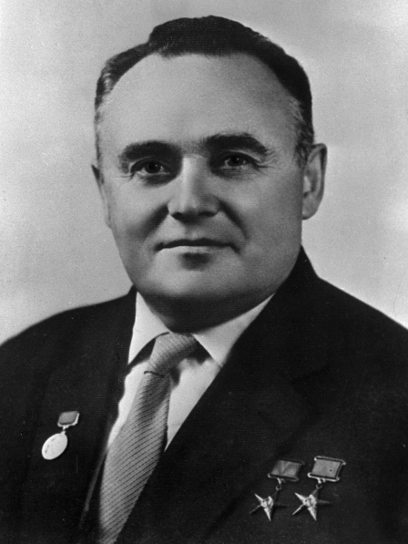

Сергей Павлович Королев
Серге́й Па́влович Королёв, Житомир, Волынская губерния, Российская империя — 14 января 1966, Москва) — советский учёный, конструктор ракетно-космических систем, председатель Совета главных конструкторов СССР (1950—1966), академик АН СССР (1958).
Сергей Королёв является одним из основных создателей советской ракетно-космической техники, обеспечившей стратегический паритет и сделавшей Союз Советских Социалистических Республик передовой ракетно-космической державой, и ключевой фигурой в освоении человеком космоса, основателем практической космонавтики. Под его руководством был организован и осуществлён запуск первого искусственного спутника Земли и первого космонавта планеты Юрия Гагарина. Дважды Герой Социалистического Труда, лауреат Ленинской премии. Член КПСС с июля 1953 года.
Скончался 14 января 1966 года в Москве, похоронен в некрополе у Кремлёвской стены.
Разработка баллистических ракет
8 сентября 1945 года С. П. Королёв вылетел в Берлин, чтобы в советской оккупационной зоне (в Тюрингии) участвовать в изучении трофейной ракетной техники. В 1946 году там был создан новый советско-германский ракетный институт «Нордхаузен», главным инженером которого был назначен С. П. Королёв.
Для изучения и воспроизведения ракет ФАУ-2 на крупном подмосковном артиллерийском заводе № 88 в конце 1945 года было организовано Специальное конструкторское бюро по ракетной технике (СКБ РТ). Когда представители СКБ РТ прибыли в институт «Нордхаузен» для ознакомления с ФАУ-2, было принято решение назначить руководителем изготовления копии ФАУ-2 Королёва.
В 1946 году он был назначен начальником отдела № 3 НИИ-88. В то же время должность Главного конструктора СКБ РТ была заменена на должность начальника и введены должности главных конструкторов по каждой ракете. В результате Королёв стал Главным конструктором.
Говоря о конструировании советских ракет, последовавших за Р-1, трудно разграничить временные периоды по их созданию. Так, об Р-2 Королёв задумывался ещё в Германии, когда проект Р-1 ещё не обсуждался, Р-5 разрабатывался им ещё до сдачи Р-2, а ещё раньше началась работа над небольшой мобильной ракетой Р-11 и первые расчёты по межконтинентальной ракете Р-7.
В 1948 году С. П. Королёв начал лётно-конструкторские испытания баллистической ракеты Р-1 (аналога Фау-2) и в 1950 году успешно сдаёт её на вооружение.
Распоряжением правительства СССР от 24.04.1950 было создано ОКБ-1 НИИ-88 МВ СССР, а его начальником и Главным конструктором стал Королёв.
В течение одного только 1954 года Королёв одновременно работал над различными модификациями ракеты Р-1 (Р-1А, Р-1Б, Р-1В, Р-1Д, Р-1Е), закончил работу над Р-5 и наметил пять разных её модификаций, завершил сложную и ответственную работу над ракетой Р-5М — с ядерным боевым зарядом. Шли работы по Р-11 и её морскому варианту Р-11ФМ, и всё более ясные черты приобретала межконтинентальная Р-7.
В 1956 году под руководством С. П. Королёва была создана двухступенчатая межконтинентальная баллистическая ракета Р-7 с отделяющейся головной частью массой 3 тонны и дальностью полёта 8 тыс. км. Ракета была успешно испытана в 1957 году на построенном для этой цели полигоне № 5 в Казахстане (нынешний космодром Байконур). Для боевого дежурства этих ракет в 1958—1959 годах была построена боевая стартовая станция (объект «Ангара») в районе посёлка Плесецк (Архангельская область, нынешний космодром Плесецк). Модификация ракеты Р-7А с увеличенной до 11 тыс. км дальностью состояла на вооружении РВСН СССР с 1960 по 1968 годы.
В 1957 году Сергеем Павловичем были созданы первые баллистические ракеты на стабильных компонентах топлива[каких?] (мобильного наземного и морского базирования); он стал первопроходцем в этих новых и важных направлениях развития ракетного вооружения.
Первый искусственный спутник Земли
В 1955 году (задолго до лётных испытаний ракеты Р-7) С. П. Королёв, М. В. Келдыш, М. К. Тихонравов вышли в правительство с предложением о выведении в космос при помощи ракеты Р-7 искусственного спутника Земли (ИСЗ). Правительство поддержало эту инициативу. В августе 1956 года ОКБ-1 вышло из состава НИИ-88 и стало самостоятельной организацией, главным конструктором и директором которой был назначен С. П. Королёв.
Для реализации пилотируемых полётов и запусков автоматических космических станций С. П. Королёв разработал на базе боевой ракеты семейство совершённых трёх- и четырёхступенчатых носителей.
4 октября 1957 года был запущен на околоземную орбиту первый в истории человечества искусственный спутник Земли. Запуск спутника высоко поднял международный авторитет СССР как страны передовой науки и техники.
«Он был мал, этот самый первый искусственный спутник нашей старой планеты, но его звонкие позывные разнеслись по всем материкам и среди всех народов как воплощение дерзновенной мечты человечества», — сказал позже С. П. Королёв.
Другие спутники и запуск космических аппаратов на Луну
Параллельно с подготовкой к пилотируемым полётам велись работы над спутниками научного, народнохозяйственного и оборонного назначения. В 1958 году разработаны и выведены в космос геофизический Спутник-3, а затем и парные спутники «Электрон» для исследования радиационных поясов Земли. В 1959 году созданы и запущены три автоматические станции к Луне: «Луна-1» пролетела вблизи Луны, впервые зарегистрировав Солнечный ветер, «Луна-2» впервые в мире совершила перелёт с Земли на другое космическое тело, доставив на Луну вымпелы Советского Союза, «Луна-3» впервые выполнила фотографирование обратной (невидимой с Земли) стороны Луны, было отснято около 70 % обратной стороны Луны. В дальнейшем С. П. Королёв начал разработку более совершенного лунного аппарата для мягкой посадки на поверхность Луны, фотографирования и передачи на Землю лунной панорамы (объект Е-6).
Человек в космосе
12 апреля 1961 г. С. П. Королёв снова поразил мировую общественность. Создав первый пилотируемый космический корабль «Восток-1», он реализовал первый в мире полёт человека в космос — гражданина СССР Юрия Алексеевича Гагарина — по околоземной орбите. Сергей Павлович в решении проблемы освоения человеком космического пространства не спешил. Первый космический корабль сделал только один виток: никто не знал, как человек будет себя чувствовать при столь продолжительной невесомости, какие психологические нагрузки будут действовать на него во время необычного и неизученного космического путешествия.
За подготовку первого полёта человека в космос С. П. Королёв был вторично удостоен звания Героя Социалистического Труда (Указ не публиковался).
Вслед за первым полётом Ю. А. Гагарина 6 августа 1961 года Германом Степановичем Титовым на корабле «Восток-2» был совершён второй космический полёт, который длился одни сутки. Опять — скрупулёзный анализ влияния условий полёта на функционирование организма. Затем совместный полёт космических кораблей «Восток-3» и «Восток-4», пилотируемых космонавтами А. Г. Николаевым и П. Р. Поповичем, с 11 по 12 августа 1962 года; между космонавтами была установлена прямая радиосвязь. На следующий год — совместный полёт космонавтов В. Ф. Быковского и В. В. Терешковой на космических кораблях «Восток-5» и «Восток-6» с 14 по 16 июня 1963 года: изучается возможность полёта в космос женщины. После полёта С. Королёв сказал своей жене, что женщинам в космосе не место[21].
С 12 по 13 октября 1964 года на более сложном космическом корабле «Восход» в космосе был экипаж из трёх человек различных специальностей: командира корабля, бортинженера и врача.
Первый в мире выход в открытый космос состоялся 18 марта 1965 года во время полёта корабля «Восход-2» с экипажем из двух человек. Космонавт А. А. Леонов в скафандре вышел через шлюзовую камеру и находился вне корабля около 20 минут.
Проект освоения Марса
С. П. Королёву принадлежит приоритет в деле практического начала работ по пилотируемым полётам на Марс. По сведениям американских источников[33], в 1959 году С. П. Королёв убедил советское руководство поддержать разработку проекта по посылке марсохода на Марс. Команда С. П. Королёва начала разработку сверхтяжёлой межпланетной ракеты с кодовым названием ТМК — Тяжёлый межпланетный корабль. Ракета должна была выводиться ракетой-носителем сверхтяжёлого класса Н-1. 12 апреля 1960 года С. П. Королёв известил советское руководство об изменении плана и добавлении задачи посадки космонавтов на поверхность Марса, когда 3 или 4 космических аппарата одновременно летят к Красной планете. Хотя данная инициатива не получила одобрения со стороны Кремля, это ещё не было концом программы по посылке людей на Марс. Идеи исследований других планет с помощью пилотируемых станций продолжали развиваться и набирали всё большую поддержку в среде учёных и инженеров космических программ.
Проект орбитальной станции
Продолжая развивать программу пилотируемых околоземных полётов, Сергей Павлович начал реализовывать свои идеи о разработке пилотируемой ДОС (долговременная орбитальная станция). Её прообразом явился принципиально новый, более совершенный, чем предыдущие, космический корабль «Союз». В состав этого корабля входил бытовой отсек, где космонавты могли долгое время находиться без скафандров и проводить научные исследования. В ходе полёта предусматривались также автоматическая стыковка на орбите двух кораблей «Союз» и переход космонавтов из одного корабля в другой через открытый космос в скафандрах. Сергей Павлович не дожил до воплощения своих идей в космических кораблях «Союз».
Лунный проект
Ещё в середине 1950-х годов Королёв вынашивал идеи запуска человека на Луну. Соответствующая космическая программа разрабатывалась при поддержке Н. С. Хрущёва. Однако эта программа так и не была реализована при жизни Сергея Павловича из-за отсутствия единоначалия (программа разрабатывалась под руководством Минобороны СССР, в котором Королёв не работал), разногласий с главным конструктором ракетных двигателей В. П. Глушко, а также смены руководства КПСС — Л. И. Брежнев не придавал лунной программе такого значения, как Хрущёв. После смерти Сергея Павловича программа запуска космонавтов на Луну была постепенно свёрнута. Советская программа освоения Луны в дальнейшем производилась с помощью беспилотных космических аппаратов.